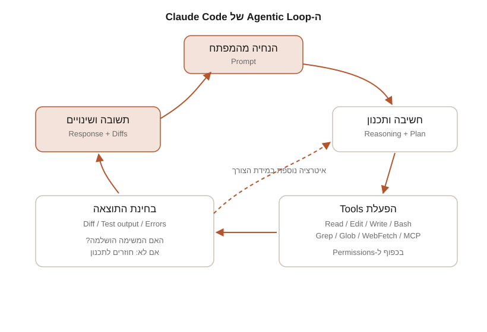
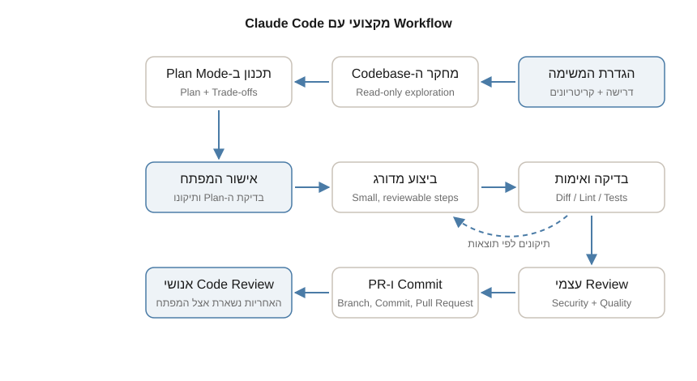

חלק א | פרק 1
מהו Claude Code
Claude Code הוא כלי פיתוח מסוג Agentic Coding Tool: תוכנה שקוראת את ה-Codebase שלכם, עורכת קבצים, מריצה פקודות ומשתלבת בכלי הפיתוח הקיימים. בפרק הזה נבין מה בדיוק המשמעות של "Agentic", כיצד פועלת לולאת העבודה של הכלי, אילו כלים מובנים עומדים לרשותו, מה הוא יכול ומה הוא אינו יכול לעשות, ואיך הוא נבדל משאר מוצרי Claude: אפליקציות הצ'אט, ה-API וה-Agent SDK.
מה מצפה לכם במדריך הזה
המדריך בנוי כספר לימוד מדורג: מתחילים מהתקנה ו-Session ראשון, ממשיכים לעבודה יומיומית עם Codebase אמיתי (קריאת קוד, Debugging, Testing, Refactoring, Git), עוברים לניהול Context, הרשאות ואבטחה, ומסיימים ביכולות מתקדמות: Skills, Hooks, MCP, Subagents, Plugins, אוטומציה ו-Claude Agent SDK. כל פרק מסתיים בתרגיל מעשי, בסיכום וברשימת מקורות רשמיים עם תאריך אימות. אין צורך בידע מוקדם על Claude Code, אבל אנחנו מניחים היכרות בסיסית עם Terminal ועם Git.
לאורך המדריך נלווה פרויקט דוגמה רציף בשם TaskFlow: אפליקציית ניהול משימות קטנה עם Frontend ב-React ו-TypeScript, Backend ב-Python ו-FastAPI, ו-Database מסוג SQLite. הפרויקט נמצא בתיקייה examples/taskflow של המדריך, ומפרק 3 ואילך נעבוד עליו בפועל: נקרא אותו, נתקן בו Bugs, נכתוב לו Tests ונרחיב אותו. המטרה אינה ללמד React או FastAPI, אלא להראות כיצד עובדים עם Claude Code על פרויקט אמיתי.
מהו Agentic Coding Tool
התיעוד הרשמי מגדיר את Claude Code כך: כלי Agentic Coding שקורא את ה-Codebase, עורך קבצים, מריץ פקודות ומשתלב בכלי הפיתוח שלכם. המילה החשובה כאן היא Agentic, כלומר "פועל כסוכן". ההבדל בין מודל שפה רגיל לבין Agent הוא היכולת לפעול: מודל שפה לבדו יכול רק להחזיר טקסט. Agent מקבל מטרה, ואז מבצע בעצמו סדרת פעולות בסביבה אמיתית: קורא קבצים, מריץ פקודות, בוחן את התוצאה ומחליט מה הצעד הבא, שוב ושוב, עד שהמטרה הושגה.
איזו בעיה זה פותר? כאשר עובדים עם עוזר צ'אט רגיל, המפתח הוא זה שמבצע את כל ה"ריצות": מעתיק קוד לתוך השיחה, מעתיק את התשובה חזרה לקובץ, מריץ את ה-Tests בעצמו, מעתיק את הודעת השגיאה חזרה לצ'אט, וחוזר חלילה. כל מעבר כזה הוא נקודת חיכוך ומקור לטעויות: העוזר רואה רק את מה שהדבקתם, לא את הפרויקט כולו. Claude Code הופך את הכיוון: הכלי נמצא בתוך תיקיית הפרויקט, רואה את הקבצים ואת מצב ה-Git, ומבצע את הלולאה הזו בעצמו, תחת פיקוח שלכם.
ההבדל בין Chat Assistant לבין Coding Agent
| היבט | Chat Assistant (למשל אפליקציית Claude) | Coding Agent (Claude Code) |
|---|---|---|
| מה הוא רואה | רק מה שהדבקתם או צירפתם לשיחה | את כל תיקיית הפרויקט, מצב ה-Branch, שינויים לא שמורים והיסטוריית Commits |
| מי מבצע פעולות | אתם: מעתיקים קוד, מריצים פקודות, מדווחים על תוצאות | הכלי: קורא, עורך, מריץ פקודות ובודק תוצאות בעצמו |
| עריכת קוד | מחזיר קטע קוד בטקסט, ואתם משלבים אותו ידנית | עורך קבצים במקומם, כולל שינוי מתואם בכמה קבצים בבת אחת |
| אימות | אין: העוזר אינו יכול להריץ את הקוד | מריץ Tests, Build ו-Lint ומתקן לפי התוצאה |
| יחידת העבודה | שאלה ותשובה | משימה שלמה: מהבנת הדרישה ועד Diff מאומת |
| בקרה | לא נדרשת: אין פעולות על המערכת | מערכת Permissions, Checkpoints ואישורי פעולה |
שימו לב שההשוואה אינה "מי חכם יותר": שני המוצרים משתמשים באותם מודלים של Claude. ההבדל הוא בסביבה וביכולת הפעולה. התיעוד הרשמי מכנה את השכבה הזו Agentic Harness: המעטפת שמספקת למודל את הכלים, את ניהול ה-Context ואת סביבת הביצוע, וכך הופכת מודל שפה לסוכן קוד מעשי.
ה-Agentic Loop: כך המשימה מתבצעת בפועל
כאשר אתם נותנים ל-Claude Code משימה, הוא עובד לפי התיעוד הרשמי בשלושה שלבים שחוזרים על עצמם: איסוף Context (כלומר הקשר: קריאת קבצים וחיפוש בקוד), ביצוע פעולה (עריכה או הרצת פקודה), ואימות התוצאה (הרצת Tests, בחינת פלט, קריאת שגיאות). השלבים אינם חדים: הם משתלבים זה בזה, והלולאה מתאימה את עצמה למשימה. שאלה על הקוד עשויה להסתיים אחרי איסוף ה-Context בלבד; תיקון Bug יעבור את כל שלושת השלבים כמה פעמים; Refactoring גדול ידרוש אימות נרחב במיוחד.

נעבור על התחנות בתרשים אחת אחת:
- הנחיה מהמפתח (Prompt). אתם מתארים בשפה חופשית מה אתם רוצים: "תקן את ה-Bug בהתחברות", "הוסף Endpoint חדש", "הסבר איך עובד מודול התורים". איכות ההנחיה משפיעה ישירות על איכות התוצאה, ולכן פרק 5 מוקדש כולו לנושא.
- חשיבה ותכנון (Reasoning + Plan). המודל מנתח את הבקשה ומחליט מה חסר לו: אילו קבצים לקרוא, מה לחפש, האם להריץ פקודת אבחון. במשימות מורכבות הוא מפרק את העבודה לצעדים. זהו החלק שבו "המודל חושב": כשהתיעוד אומר ש-Claude "בוחר" או "מחליט", הכוונה להסקת המסקנות של המודל.
- הפעלת Tools. כדי לפעול בעולם, המודל מפעיל כלים מובנים: Read לקריאת קובץ, Grep לחיפוש, Edit לעריכה, Bash להרצת פקודה, ועוד. כל הפעלה כפופה למערכת ה-Permissions: פעולות שמשנות את המערכת מבקשות אישור מכם כברירת מחדל. את הכלים נכיר מיד בסעיף הבא.
- בחינת התוצאה. כל כלי מחזיר מידע: תוכן הקובץ, פלט הפקודה, הודעת השגיאה, תוצאת ה-Tests. המידע הזה נכנס חזרה ללולאה ומזין את ההחלטה הבאה. אם ה-Tests נכשלו, המודל קורא את השגיאה ומתקן; אם הכול עבר, הוא עובר לסיכום.
- תשובה ושינויים. בסוף הלולאה אתם מקבלים תשובה מסודרת ואת ה-Diffs של השינויים שבוצעו. משם ההחלטה אצלכם: לקבל, לבקש תיקון, או לבטל.
נקודה חשובה מהתיעוד הרשמי: גם אתם חלק מהלולאה. אפשר לעצור את Claude בכל רגע (מקש Esc), להוסיף מידע תוך כדי עבודה, או לכוון אותו לגישה אחרת. הכלי עובד באופן עצמאי אך נשאר קשוב לקלט שלכם. במשימת "תקן את ה-Tests הנכשלים", למשל, מהלך אופייני לפי התיעוד ייראה כך: הרצת חבילת ה-Tests לזיהוי הכשלים, קריאת פלט השגיאות, חיפוש קובצי המקור הרלוונטיים, קריאתם, עריכה לתיקון, והרצת ה-Tests שוב לאימות. שש פעולות שכל אחת מזינה את הבאה: זו הלולאה בפעולה.
שתי מילים על צד ה"חשיבה" של הלולאה: Claude Code עובד עם כמה מודלים של Claude, עם איזונים שונים בין מהירות, עלות ועומק הסקה. לפי התיעוד הרשמי, Sonnet מתאים לרוב משימות הקוד, ו-Opus מספק הסקה חזקה יותר להחלטות ארכיטקטוניות מורכבות. מחליפים מודל בפקודת /model בתוך ה-Session, או בדגל --model בהפעלה. פרק 8 מוקדש כולו לבחירת המודל הנכון למשימה.
ועוד עיקרון שכדאי להכיר מהיום הראשון: הלולאה מתועדת. Claude Code שומר את השיחה באופן מקומי, הודעה אחר הודעה, בקובצי JSONL תחת ~/.claude/projects/. השמירה הזו היא שמאפשרת לחזור ל-Session קודם (claude --continue או claude --resume), לפצל שיחה לענף חדש, ולהשתמש ב-Checkpoints כדי להחזיר קבצים לאחור. כל Session חדש מתחיל עם Context נקי, בלי ההיסטוריה של קודמיו: את הידע הקבוע שומרים ב-CLAUDE.md, כפי שנראה בפרק 15.
הכלים המובנים: כיצד Claude קורא, עורך ומריץ
הכלים (Tools) הם מה שהופך את Claude Code לסוכן. לכל כלי שם רשמי מדויק, שמשמש גם בהגדרת Permissions, Hooks ו-Subagents בפרקים מתקדמים. אלה הכלים המרכזיים, לפי טבלת ה-Tools Reference הרשמית:
| Tool | מה הוא עושה | דורש אישור כברירת מחדל |
|---|---|---|
Read | קורא תוכן של קבצים, כולל תמונות, קובצי PDF ו-Jupyter Notebooks | לא, בתוך תיקיית העבודה |
Edit | עריכה נקודתית בקובץ: החלפת מחרוזת מדויקת במחרוזת חדשה | כן |
Write | יוצר קובץ חדש או דורס קובץ קיים בתוכן מלא | כן |
Bash | מריץ פקודות Shell: Build, Tests, Git, סקריפטים | כן, אך קבוצת פקודות קריאה בלבד רצה ללא אישור |
Grep | מחפש תבניות בתוכן קבצים, מבוסס על ripgrep | לא, בתוך תיקיית העבודה |
Glob | מאתר קבצים לפי תבנית שם, למשל src/**/*.ts | לא, בתוך תיקיית העבודה |
WebFetch | מביא תוכן מכתובת URL, למשל תיעוד רשמי | כן, בפעם הראשונה לכל Domain חדש, למעט קבוצת אתרי תיעוד מאושרת מראש |
WebSearch | מבצע חיפוש באינטרנט ומחזיר כותרות וכתובות | כן |
Agent | מפעיל Subagent: עוזר משנה עם Context Window נפרד למשימה ממוקדת | לא, אך כל כלי שה-Subagent מפעיל נבדק בנפרד |
שם הכלי הרשמי להפעלת Subagents הוא Agent. אל תתבלבלו עם כלי ניהול המשימות TaskCreate, TaskList, TaskGet ו-TaskUpdate, שמנהלים את רשימת המשימות של ה-Session ואינם מפעילים Subagents. רשימת הכלים המלאה כוללת כלים נוספים, בהם Skill, AskUserQuestion, NotebookEdit, PowerShell, LSP ו-Monitor. נפגוש אותם בפרקים הרלוונטיים.
כמה עקרונות עבודה של הכלים שכדאי להכיר כבר עכשיו, כי הם מסבירים התנהגויות שתראו על המסך:
- קריאה לפני עריכה. כלי ה-Edit מבצע החלפת מחרוזת מדויקת, ו-Claude נדרש לקרוא את הקובץ בשיחה הנוכחית לפני שהוא עורך אותו. כך העריכה מבוססת על התוכן האמיתי של הקובץ ולא על ניחוש.
- חמש משפחות יכולת. התיעוד מקבץ את הכלים לחמש קטגוריות: פעולות על קבצים, חיפוש, הרצה (Execution), רשת (Web) ו-Code Intelligence (ניווט סמלים ואיתור שגיאות טיפוסים, בעזרת Plugin ייעודי לשפה).
- הרשאות לפי כלי. כלים שקוראים בלבד בתוך תיקיית העבודה אינם מבקשים אישור; כלים שמשנים את המערכת או יוצרים תעבורת רשת מבקשים. את מערכת ההרשאות המלאה, כולל Permission Modes ורשימות allow/deny, נלמד בפרק 18.
- מה הכלי רואה. כשמריצים את
claudeבתיקייה, הוא מקבל גישה לקבצי הפרויקט, ל-Terminal, למצב ה-Git, לקובץ ההנחיות CLAUDE.md (פרק 15), ל-Auto Memory (פרק 16) ולהרחבות שהגדרתם. קבצים מחוץ לתיקיית העבודה דורשים אישור מפורש.
מה Claude Code יכול לעשות, ומה לא
בצד היכולות, התיעוד הרשמי מונה בין השאר: בניית Features על פני כמה קבצים, תיקון Bugs מהודעת שגיאה ועד שורש הבעיה, כתיבת Tests ותיקון כשלים, טיפול ב-Merge Conflicts, עדכון Dependencies, עבודה ישירה עם Git (יצירת Branches, Commits ו-Pull Requests), אוטומציה ב-CI, וחיבור לשירותים חיצוניים דרך MCP. הוא מצטיין גם במשימות שאינן קוד טהור: כתיבת תיעוד, חקירת Codebase זר והרצת תהליכי Build.
ובצד המגבלות, שחשוב להכיר לא פחות:
- המודל טועה. Claude יכול להחזיר קוד שנראה סביר אך אינו מטפל במקרי קצה, או "לתקן" תסמין במקום את שורש הבעיה. התיעוד הרשמי מנסח זאת כך: Claude עוצר כשהעבודה נראית גמורה. בלי בדיקה שהוא יכול להריץ, "נראית גמורה" היא האות היחיד, ואתם הופכים ללולאת האימות.
- ה-Context Window מוגבל. השיחה, הקבצים שנקראו ופלטי הפקודות ממלאים את חלון ההקשר, וביצועי המודל יורדים כשהוא מתמלא. ניהול Context הוא מיומנות מרכזית שנלמד בפרק 14.
- אין ביטול לפעולות חיצוניות. מנגנון ה-Checkpoints מצלם קבצים לפני עריכה ומאפשר Rewind, אבל הוא מכסה שינויי קבצים בלבד. פעולות שמשפיעות על מערכות מרוחקות, כמו Database, API חיצוני או Deployment, אינן ניתנות לשחזור. זו בדיוק הסיבה שהכלי מבקש אישור לפני פקודות עם תופעות לוואי חיצוניות. וגם: Checkpoints אינם תחליף ל-Git (פרק 19).
- הוא אינו קורא מחשבות. דרישות עמומות מולידות תוצאות עמומות. הידע על המוסכמות של הפרויקט שלכם צריך להגיע ממכם: בהנחיה, ב-CLAUDE.md או ב-Skills.
- הוא פועל בגבולות ההרשאות שנתתם. זו מגבלה מכוונת ורצויה: בלי אישור שלכם (או הגדרה מפורשת מראש), הוא לא יריץ פקודות שמשנות את המערכת.
אחריות המפתח: מדוע לעולם לא מאשרים בעיוורון
Claude Code מציג לכם כל שינוי כ-Diff וכל פקודה לפני הרצתה. הפיתוי, אחרי האישור העשירי, הוא ללחוץ "אשר" בלי לקרוא. אל תעשו את זה. הקוד שנכנס ל-Repository הוא באחריותכם המלאה: אתם אלה שחותמים על ה-Commit, עוברים Code Review ועונים על תקלה ב-Production. הכלל המעשי מהתיעוד: דרשו מ-Claude ראיות במקום הצהרות. פלט ה-Tests, הפקודה שרצה והתוצאה שלה, צילום מסך של התוצאה. בחינת ראיות מהירה יותר מאימות ידני מלא, ועדיין שומרת אתכם בשליטה.
אישור אוטומטי של כל פעולה, ובפרט הרצה עם דגלים שמבטלים את מערכת ההרשאות, חושף אתכם למחיקת קבצים, לדליפת סודות ולשינויים במערכות חיצוניות בלי שום בלם. עבודה בטוחה עם הרשאות מוגדרת בפרקים 18 ו-20. עד אז: קראו כל Diff לפני אישור, והריצו את ה-Tests בעצמכם כשמשהו נראה חשוד.
מפה מוצרית: Claude Code מול שאר מוצרי Claude
משפחת המוצרים של Anthropic כוללת כמה מוצרים שכולם מבוססים על מודלי Claude, אבל שונים זה מזה בתכלית. בלבול ביניהם הוא אחת הטעויות הנפוצות של מתחילים, ולכן נסדר את המפה כבר עכשיו:
| מוצר | מה הוא | למה הוא מיועד | מה הוא אינו |
|---|---|---|---|
| Claude Code | כלי Agentic Coding שרץ מול תיקיית הפרויקט שלכם | פיתוח בפועל: קריאת Codebase, עריכת קוד, הרצת פקודות, Git, אוטומציה | אינו צ'אט כללי; דורש סביבת עבודה (Terminal, IDE, Desktop או Web) |
| Claude (אפליקציות צ'אט: Web, Desktop, Mobile) | עוזר שיחה כללי עם Projects, Artifacts ו-Connectors | שאלות, כתיבה, ניתוח מסמכים, סיעור מוחות | אינו סוכן הקוד: אינו עובד עם כלי הפיתוח על ה-Repository המקומי שלכם |
| Claude API | גישה ישירה למודלים דרך Messages API בפלטפורמת המפתחים platform.claude.com | בניית יישומים ושירותים משלכם שמשתמשים במודל | אינו כולל Agentic Harness: אין כלים מובנים, אין לולאת סוכן מוכנה |
| Claude Agent SDK | אותם כלים, לולאת סוכן וניהול Context של Claude Code, כספרייה ל-Python ול-TypeScript | בניית Agents משלכם עם שליטה מלאה בכלים ובהרשאות (פרק 31) | אינו מוצר קצה למשתמש; דורש כתיבת קוד |
הכלל שילווה אותנו בכל המדריך: אין להציג יכולת של מוצר אחד כאילו היא זמינה במוצר אחר. כשפרק כלשהו מציג יכולת, נציין באיזה מוצר ובאיזה משטח היא קיימת.
היכן Claude Code רץ
Claude Code עצמו זמין בכמה משטחי עבודה (Surfaces). כולם מתחברים לאותו מנוע, ולכן קובצי CLAUDE.md, ההגדרות ושרתי ה-MCP שלכם עובדים בכולם:
| משטח | מה מקבלים | הערות וסטטוס |
|---|---|---|
| Terminal (CLI) | הממשק המלא: עבודה בשורת הפקודה על כל הפרויקט | Stable הבסיס שכל שאר המשטחים נשענים עליו |
| VS Code | Extension עם Inline Diffs, אזכורי @ וסקירת Plan בתוך העורך; קיימת גרסה גם ל-Cursor | Stable פרק 27 |
| JetBrains | Plugin ל-IntelliJ IDEA, PyCharm, WebStorm ועוד, עם תצוגת Diff אינטראקטיבית | דורש התקנה נפרדת של ה-CLI; פרק 27 |
| אפליקציית Desktop | לשונית Code באפליקציית Claude: כמה Sessions מקומיים במקביל, סקירת Diffs חזותית, משימות מתוזמנות | זמין ל-macOS ול-Windows; דורש מינוי בתשלום |
claude.ai/code (Web) | הרצת Sessions על תשתית ענן מנוהלת של Anthropic, בלי התקנה מקומית; זמין גם מאפליקציית Claude ל-iOS ול-Android | Research Preview למנויי Pro, Max ו-Team, ולמשתמשי Enterprise עם Seats מתאימים |
מעבר לחמשת המשטחים האלה, Claude Code משתלב גם ב-CI/CD דרך GitHub Actions, בצ'אט צוותי דרך Slack, ובדפדפן דרך Claude in Chrome. אלה אינטגרציות, לא משטחי עבודה מלאים, ונרחיב עליהן בפרקים 27 ו-28. הבחירה היכן לעבוד תלויה בהעדפה: במדריך הזה נתחיל מה-Terminal, כי הוא המשטח המלא ביותר, וכל מה שנלמד בו תקף גם בשאר המשטחים.
ה-Workflow המקצועי במבט על
עכשיו, כשאנחנו מבינים את הלולאה ואת הכלים, אפשר להציג את התמונה שהמדריך כולו יבנה: תהליך עבודה מקצועי עם Claude Code. התהליך מבוסס על ההמלצה המרכזית בתיעוד הרשמי: להפריד בין מחקר ותכנון לבין ביצוע, ולתת ל-Claude דרך לאמת את עבודתו.

שימו לב לשלוש התחנות המודגשות בתרשים: הגדרת המשימה, אישור המפתח ו-Code Review אנושי. שלושתן נמצאות אצלכם, לא אצל הכלי. Claude Code מבצע את המחקר, התכנון, הכתיבה והאימות האוטומטי, אבל ההחלטות והאחריות נשארות אנושיות. את התהליך הזה נפרק לשלבים מעשיים בפרקים הבאים: תכנון ב-Plan Mode בפרק 7, שינוי מבוקר צעד אחר צעד בפרק 9, ו-Git ו-Pull Requests בפרק 13.
מתי להשתמש ב-Claude Code, ומתי לא
מתי כן:
- משימות פיתוח על Codebase קיים: תיקון Bugs, הוספת Features, Refactoring, כתיבת Tests ותיעוד.
- היכרות עם פרויקט זר: שאלות על ארכיטקטורה, מעקב אחרי זרימת נתונים, מיפוי תלויות.
- עבודות חוזרות ומייגעות: תיקון שגיאות Lint בכל הפרויקט, עדכוני Dependencies, כתיבת Release Notes.
- אוטומציה: הרצה לא אינטראקטיבית ב-CI, סקירת Pull Requests, משימות מתוזמנות.
מתי לא, או לא ישירות:
- שאלה כללית שאינה קשורה לפרויקט מסוים: אפליקציית הצ'אט של Claude מהירה וזולה יותר לכך.
- בניית מוצר שצריך לקרוא ל-Claude בתוכו: לשם כך קיימים Claude API ו-Claude Agent SDK.
- עבודה ישירה מול Production בלי גבולות הרשאה מוגדרים: קודם לומדים Permissions ואבטחה (פרקים 18 ו-20), רק אחר כך מתקרבים למערכות רגישות.
- משימה שאינכם מסוגלים לאמת: אם אין לכם דרך לבדוק שהתוצאה נכונה (Tests, בדיקה ידנית, סקירה של מומחה), אל תשלחו אותה ל-Production.
שגיאות נפוצות של מתחילים
- להתייחס אליו כאל צ'אט. לשאול שאלה, להעתיק את התשובה ידנית לקובץ, ולפספס את כל הרעיון. תנו לכלי לבצע את השינוי בעצמו ולהריץ את הבדיקות.
- לאשר כל פעולה בלי לקרוא. כפי שראינו: ה-Diff מוצג כדי שתקראו אותו. אישור עיוור מבטל את שכבת הבטיחות החשובה ביותר.
- לבלבל בין המוצרים. לחפש יכולות של Claude Code באפליקציית הצ'אט, או לצפות שה-API יגיע עם לולאת סוכן מובנית. חזרו לטבלת המוצרים שבפרק זה בכל פעם שיש ספק.
- משימת ענק אחת במקום צעדים. "תבנה לי את כל המערכת" מוביל לתוצאה בינונית שקשה לסקור. עובדים בצעדים קטנים שאפשר לאמת, כפי שנלמד בפרק 9.
- להזניח את האימות. אם לא ביקשתם להריץ Tests ולא הגדרתם מה נחשב הצלחה, אתם סומכים על "נראה תקין". הגדירו קריטריון בדיקה כבר בהנחיה.
- לצפות שהוא יידע את המוסכמות שלכם. בלי CLAUDE.md ובלי הנחיה מפורשת, הכלי מנחש לפי הקוד הקיים. בפרק 15 נלמד לתעד מוסכמות פעם אחת ולחסוך תיקונים חוזרים.
תרגיל
לפניכם חמישה תרחישים. לכל אחד מהם קבעו מהו המוצר או המשטח המתאים ביותר: Claude Code (ואם כן, באיזה משטח), אפליקציית הצ'אט של Claude, Claude API או Claude Agent SDK. נמקו בקצרה.
- אתם רוצים להבין מה ההבדל בין REST ל-GraphQL לקראת ראיון עבודה.
- יש Bug בפרויקט TaskFlow המקומי שלכם, ואתם רוצים שהוא יאותר, יתוקן, ושה-Tests ירוצו לאימות.
- החברה שלכם בונה מוצר שמסכם אוטומטית פניות של לקוחות, ואתם צריכים לקרוא למודל מתוך קוד ה-Backend של המוצר.
- אתם בנסיעה עם הטלפון בלבד, ורוצים להריץ משימה ארוכה על Repository שנמצא ב-GitHub ולבדוק את התוצאה מאוחר יותר.
- אתם רוצים לבנות סוכן פנימי משלכם, שרץ בשרת של הצוות, קורא קבצים ומריץ פקודות בלולאת סוכן, עם שליטה מלאה שלכם בכלים ובהרשאות.
פתרון מוסבר
- אפליקציית הצ'אט של Claude. זו שאלת ידע כללית בלי Codebase: אין צורך בכלים, בקבצים או בהרצת פקודות. צ'אט הוא הדרך המהירה והפשוטה.
- Claude Code, במשטח ה-Terminal או ה-IDE. המשימה דורשת את הלולאה המלאה: קריאת הקוד המקומי, איתור הבעיה, עריכה והרצת Tests לאימות. זה בדיוק התרחיש שהכלי נבנה עבורו.
- Claude API. כאן המודל הוא רכיב בתוך מוצר: קוראים ל-Messages API מתוך קוד השרת. אין צורך בלולאת סוכן על מערכת קבצים, ולכן ה-API הישיר מתאים יותר מ-Agent SDK.
- Claude Code על ה-Web (
claude.ai/code, בסטטוס Research Preview). ה-Session רץ על תשתית ענן של Anthropic מול ה-Repository ב-GitHub, נשאר פעיל גם כשסוגרים את הדפדפן, וניתן למעקב מאפליקציית המובייל. - Claude Agent SDK. אתם רוצים לבנות סוכן משלכם עם אותה לולאה ואותם כלים של Claude Code, אבל בקוד שלכם ובשליטה שלכם. זה בדיוק הייעוד של ה-SDK, בספריות Python ו-TypeScript (פרק 31).
אם עניתם "Claude Code" גם על 3 או 5: שימו לב לגבול המוצרי. Claude Code הוא כלי למפתח היושב מולו (או מפעיל אותו באוטומציה), ואילו בניית מוצר או סוכן משלכם נעשית עם ה-API או ה-SDK.
סיכום
- Claude Code הוא Agentic Coding Tool: הוא קורא את ה-Codebase, עורך קבצים, מריץ פקודות ומאמת תוצאות, בתוך לולאת עבודה שאתם מפקחים עליה.
- ה-Agentic Loop פועל בשלושה שלבים משולבים: איסוף Context, ביצוע פעולה ואימות התוצאה, עם אפשרות שלכם להתערב בכל רגע.
- הפעולה מתבצעת דרך Tools מובנים:
Read,Edit,Write,Bash,Grep,Glob,WebFetch,WebSearchו-Agent, וכל פעולה משנה כפופה ל-Permissions. - הכלי חזק אך מוגבל: הוא טועה לפעמים, תלוי ב-Context Window, ואינו יכול לבטל פעולות על מערכות חיצוניות. לכן לעולם אין לאשר שינויים בעיוורון, והאחריות על הקוד נשארת אצלכם.
- מפת המוצרים: Claude Code לפיתוח על Repository; אפליקציות הצ'אט לשיחה כללית; Claude API לבניית יישומים; Claude Agent SDK לבניית סוכנים משלכם.
- Claude Code רץ ב-Terminal, ב-VS Code, ב-JetBrains, באפליקציית ה-Desktop וב-Web (Research Preview), וכולם מחוברים לאותו מנוע.
- בפרק הבא נתקין את הכלי ונכין את סביבת העבודה, ומפרק 3 נתחיל לעבוד בפועל על פרויקט הדוגמה TaskFlow.
Claude Code Overview |
How Claude Code Works |
Tools Reference |
Extend Claude Code (Features Overview) |
Best Practices |
Claude Code on the Web |
Agent SDK Overview
נבדק: 28.07.2026